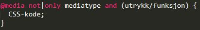

Media typer
 Media queries er en block med css egenskaper som starter å fungere når en viss egenskap er sann. Litt som en "if-setning" i javascript. Når f.eks. bredden på programmet er 800px eller mindre så blir bakgrunnsfargen rød. En media type kan se f.eks. ut som dette: @media only screen and (max-width: 600px). Alstå når screen/nettleseren er mindre enn 600 så skal det skje noe (som ikke er spesifisert.) "Only" brukes for å forhindre eldre nettlesere for å bruke det du har spesifisert. Du har også mulighet for å bruke "not" og "and". "Not" snur om/endrer meningen med media querien. "And" kompinerer en mediafunkson med en mediatype er mediafunksjon. Om du har brukt "not" eller "only" så må du også legge til en mediatype. Noen eksempler på mediatyper og mediafunksjoner:
Media queries er en block med css egenskaper som starter å fungere når en viss egenskap er sann. Litt som en "if-setning" i javascript. Når f.eks. bredden på programmet er 800px eller mindre så blir bakgrunnsfargen rød. En media type kan se f.eks. ut som dette: @media only screen and (max-width: 600px). Alstå når screen/nettleseren er mindre enn 600 så skal det skje noe (som ikke er spesifisert.) "Only" brukes for å forhindre eldre nettlesere for å bruke det du har spesifisert. Du har også mulighet for å bruke "not" og "and". "Not" snur om/endrer meningen med media querien. "And" kompinerer en mediafunkson med en mediatype er mediafunksjon. Om du har brukt "not" eller "only" så må du også legge til en mediatype. Noen eksempler på mediatyper og mediafunksjoner:
Mediatyper
Noen mediatypene er: screen, all, print, handheld, projection og speech. "Screen" blir brukt for skjermene til datamaskiner, mobiler, nettbrett osv. F.eks: @media only screen and (max-width: 800px) ergo noen skal skje når bredden er mindre eller lik 800px. "All" inluderer alle media typer. Det er default. "Print" blir brukt for skrivere. Kan f.eks. lage et stilark som blir rødt: @media print {body { background-color: red;}. "Handheld" er egentlig dødt på grunn av responsivt design. Den gjenkjenner om dette er en håndholt enhet. Ifsåfall gjør den det du har spesifisert. "Prjection" fungerer blant annet når du trykker f11 (fullskjerm) på nettleseren din. Da endres noe til det du har spesifisert. "Speech" er for talegjenkjenning. Altså gjenkjenner den det ordet så...Mediafunksjoner
Det er mange funksjoner som man kan bruke. W3schools har mange eksempler. "Height" beregner viewport høyden og gjør da noe. "Min-color" beregner antallet bits per farge og når denne når minimum (det du har spesifisert) så gjør den noe (altså det du sier den til å gjøre). "Hover" ble lagt til i Media Queries Level 4. Denne finner bestemmer f.eks. om det er lov til å hovre over et gitt element.Det er ikke alle disse mediatypene og mediafunksjonene som blir brukt like mye. Noen regnes nå som relativt utdatert som f.eks. mediatypen "handheld". Bildet til høyre viser et klassisk eksempel på hvordan @media kan brukes. Når man bruker flere etter hverandre som "If-setninger" i javascript så kan det skje ganske mye. Min Index.html bruker en media type. Den ser slik ut: @media only screen and (max-width: 1356px) {.artikler {max-width: 80%; min-width: 500px; }}. Denne mediafunksjonen kombinert med en transition gjør at teksen endrer seg i en fin bevegelse. Dette gjør at siden ser best mulig ut (ifølge meg). Under ser du et bilde av hvilken nettlesere som støtter @media.

Et eksempel på hvordan det skal/kan se ut:
